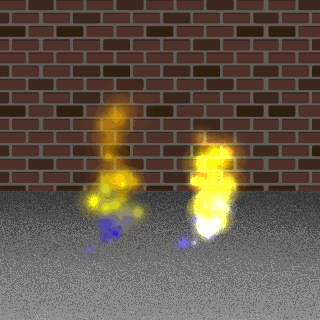

Créer un type de particules Créer un type de particules
Créer un type de particules Créer un type de particules Dans vos projets, vous pouvez avoir plusieurs types de particules différents, chacun avec leurs propres propriétés comme la direction et la couleur, etc... qui sont définies en utilisant les différentes actions de type de particules. Cependant, vous devez d'abord créer un type de particule en utilisant cette action, qui alloue essentiellement une petite quantité de mémoire pour contenir tous les détails de la particule afin que vous puissiez utiliser les particules à tout moment dans le futur. Vous donnez une variable pour contenir la valeur d'ID unique pour le type de particule, puis dans toutes les actions futures relatives à cette particule, vous pouvez appeler la variable. Vous pouvez choisir de marquer cette variable comme étant une variable locale temporaire, mais cela signifie qu'elle sera rejetée à la fin du script ou de l'événement d'action, ce qui signifie que le type de particule existera mais vous laissera sans aucun moyen d'y accéder. il faut donc faire attention en utilisant ceci (en général, les types de particules n'auront jamais besoin d'être stockés dans une variable locale temporaire, mais pour certaines choses, comme dessiner des particules sur une surface, cela peut être nécessaire).
NOTE: Un type de particule, une fois créé, reste résident dans la mémoire système pendant la durée du jeu, et donc si vous devez le recréer à n'importe quel moment (par exemple, si vous appelez l'action Redémarrer le jeu ), vous devez détruire le type de particules actuel sinon vous obtenez une fuite de mémoire. Cela se produit lorsqu'une ressource est ajoutée à la mémoire puis « GameMaker Studio 2 », ce qui signifie que GameMaker Studio 2 n'a plus aucun moyen d'interagir avec cette ressource. Cela conduit à une obstruction de la mémoire par des ressources inaccessibles qui, à leur tour, peuvent causer des problèmes avec votre jeu. Pour détruire un type de particule lorsqu'il n'est plus nécessaire, utilisez l'action Détruire le type de particule.
Vous pouvez également définir le mode de fusion à utiliser pour les particules. Par défaut, ils seront dessinés avec un mode de fusion "normal", donc les couleurs ne seront pas modifiées par ce qui a été dessiné sous la particule, mais avec un mélange marqué, elles seront dessinées en utilisant un mélange additif, ce qui signifie que les choses seront dessinées aux couleurs en fonction de ce qui a été dessiné sous la particule. Le mélange additif donne des effets très brillants et "brillants", et est idéal pour les exlposions, les lasers, le feu, etc... tandis que le mélange normal est meilleur pour des choses comme la pluie, la fumée ou les effets de débris. L'image ci-dessous montre le même effet avec additif activé et avec additif désactivé:


Argument La description Target La variable cible pour contenir la valeur d'ID de type renvoyée

Le code de bloc d'action ci-dessus crée un nouveau type de particule et affecte sa valeur d'ID unique à une variable globale. Il procède ensuite à définir toutes les propriétés pour le type de particule.